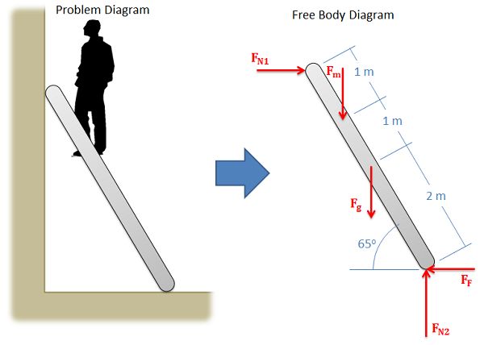
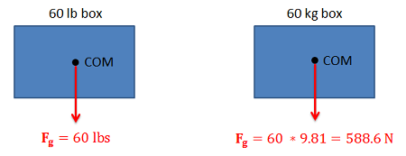
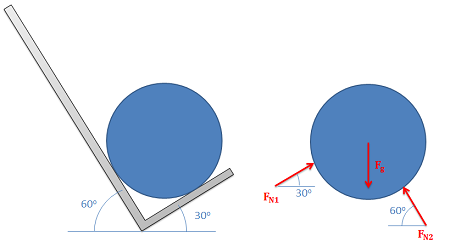
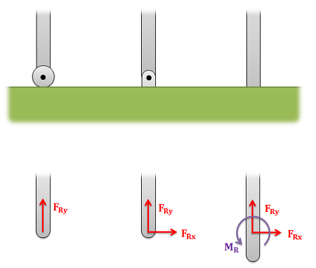
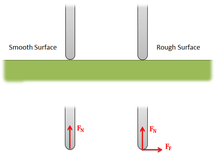
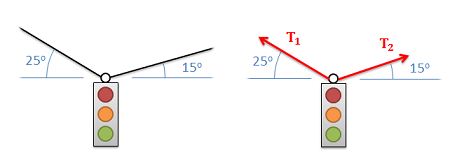

A free body diagram is a tool used to solve engineering mechanics
problems. As the name suggests, the purpose of the diagram is to "free"
the body from all other objects and surfaces around it so that it can be
studied in isolation. We will also draw in any forces or moments acting
on the body, including those forces and moments exerted by the
surrounding bodies and surfaces that we removed.
The
diagram below shows a ladder supporting a person and the free body diagram of that ladder.
As you can see, the ladder is separated from all other objects and all
forces acting on the ladder are drawn in with key dimensions and angles
shown.

A ladder with a man standing on it is shown on the left.
Assuming friction only at the base, a free body diagram of the
ladder is shown on the right.
Constructing the Free Body Diagram
The first step in solving most mechanics problems will be to
construct a free body diagram. This simplified diagram will allow us to
more easily write out the equilibrium equations for statics or strengths
of materials problems, or the equations of motion for dynamics problems.
To construct the diagram we will use the following process.
First draw the body being analyzed, separated from all other
surrounding bodies and surfaces.
Second, draw in all forces and moments acting directly on the body.
Do not include any forces acting on the other bodies in the system. Some
common types of forces
seen in mechanics problems are:
Gravitational Forces: Unless otherwise noted, the
mass of an object will result in a gravitational weight force applied
to that body. This weight is usually given in
pounds in the English system, and is modeled as 9.81 (g) times
the mass of the body in kilograms for the metric system
(resulting in a weight in Newtons). This force will
always point down towards the center of the earth and act on the
center of mass of the body.

Gravitational forces always act downward on the center
of mass.
Normal Forces (or Reaction Forces): Every object in direct contact with
the body will exert a normal force on that body which prevents
the two objects from occupying the same space at the same time.
Note that only objects in direct contact can exert normal forces
on the body.
An object in contact with another object or surface will
experience a normal force that is perpendicular (hence
normal) to the surfaces in contact.

Normal forces always act perpendicular to
the surfaces in contact. The barrel in the hand truck
shown on the left has a normal force at each contact
point.
Joints or connections between bodies can also cause
reaction forces or moments, and we will have one force or
moment for each type of motion or rotation the connection
prevents.

The roller on the left allows for rotation
and movement along the surface, but a normal force in
the y direction prevents motion vertically. The pin
joint in the center allows for rotation, but normal
forces in the x and y directions prevent motion in all
directions. The fixed connection on the right has a
normal forces preventing motion in all directions and a
reaction moment preventing rotation.
Friction Forces: Objects in direct contact with the
body can also exert friction forces on the body, which will resist
the two bodies sliding against one another. These forces will
always be perpendicular to the surfaces in contact. Friction is
the subject of an entire chapter in this book, but for simple
scenarios we usually assume rough or smooth surfaces.
For smooth surfaces we assume that there is no friction
force.
For rough surfaces we assume that the bodies will not
slide relative to one another no matter what. In this case
the friction force is always just large enough to prevent
this sliding.

For a smooth surface we assume only a normal
force perpendicular to the surface. For a rough surface
we assume normal and friction forces are present.
Tension in Cables: Cables, wires or ropes attached to
the body will exert a tension force on the body in the direction
of the cable.

The tension force in cables always acts
along the direction of the cable.
The above forces are the most common, but other forces such
as pressure from fluids, spring forces and magnetic forces may
exist and may act on the body.
Once the forces are identified and added to the free body diagram,
the last step is to label any key dimensions and angles on the diagram.
Video Lecture
Worked Problems:
Question 1:
The drawing below shows two boxes sitting on a table. Draw a free
body diagram of box A and box B.
The car shown below is moving and then slams on the brakes
locking up all four wheels. The distance between the two wheels is 8
feet and the center of mass is 3 feet behind and 2.5 feet above the
point of contact between the front wheel and the ground. Draw a free
body diagram of the car as it comes to a stop.
A 600 lb load is supported by a 5 meter long, 100 lb cantilever
beam. Assume the beam is firmly anchored to the wall. Draw a free
body diagram of the beam.
The main arm of a crane has a mass of 400kg (assume the center of
mass is at the midpoint of the arm) and supports a 200 kg load and a
600 kg counterweight. The arm is connected to the vertical support
via a pin joint and two flexible cables. Draw a free body diagram of
the arm.